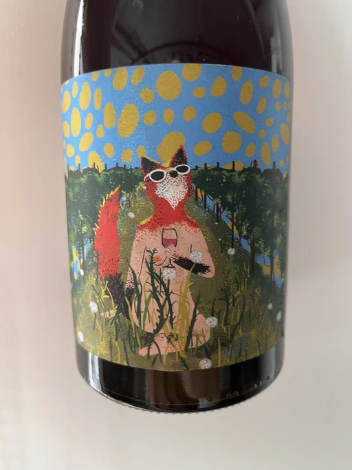

- Type
- Rose Still, Dry
- Producer
- Alex Craighead
- Vintage
- 2020
- Location
- New Zealand, Nelson
- Grapes
- Riesling, Syrah, Sauvignon Blanc, Chardonnay, Gewürztraminer, Pinot Gris, Pinot Noir
- Alcohol
- 13
- Sugar
- 1
- Price
- 802 UAH
- Cellar
- N/A
Producer
Kindeli wines are the product of Alex Craighead and Josefina Venturino. Alex, born in Australia and raised in New Zealand, studied wine and soon after began to travel the world to gain experience from other winemakers in various regions. That’s how he met Josefina, a landscape architect from Argentina. Eventually, they moved to New Zealand.
From day zero, they were experimenting with low intervention winemaking. In 2014 they released their first wines in Martinborough. In 2016 they moved to Nelson, where they bought an existing organic winery and vineyard. In other words, they moved from the southern part of the Northern Island to the northern part of the Southern Island. Are you confused? You shouldn’t be.
On 4.5 hectares of clay soils in Upper Moutere, Alex and Josefina cultivate 14 various varieties. In addition, they lease another three vineyards totalling another 9.5 hectares.
Ratings
2022-08-23 - 7.50
My experience with Alex Craighead wines can be described with one phrase - every bottle was awful. And yet I decided to taste this wine in hopes that it settled down and my taste buds are more used to funky wines. Unexpectedly, it was good. And not overly crazy. Simple stuff with notes of strawberry, gooseberry, rotten peach, and moonshine (at early stages). Fresh, and not demanding.
Wine #7 on Sin Titulo.
Related